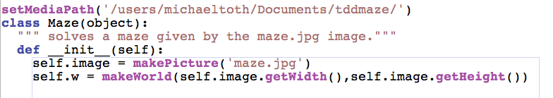

CSI 106 Muhlenberg College - Michael Toth
Page 4
| Write the code to make the world test pass. Use the width and
height of the image to set the dimensions
|
 |
| This is just a blank world. We want to see our maze appear in the
world however. Write a test to check that the world has the
maze as its picture. |
 |